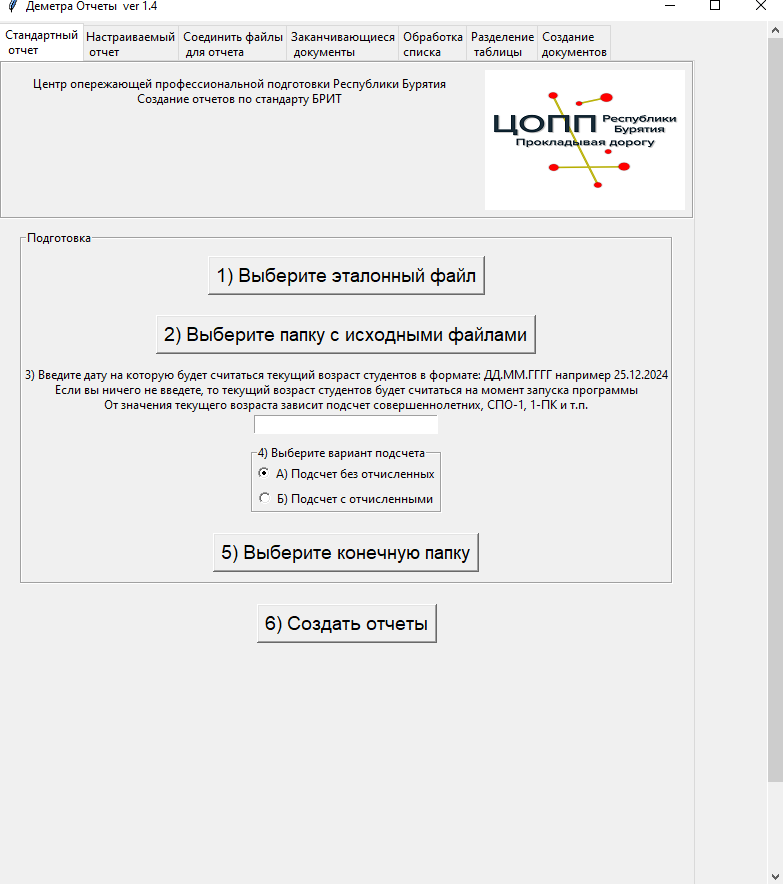

Назначение программы
Программа Деметра предназначена для облегчения сбора и обработки отчетности в рамках ПОО (профессиональная образовательная организация) а также подготовке и выверке файлов ЕГИССО. Для ее работы нужен только Excel или его аналоги, программа не использует базы данных, локальную сеть, Интернет.
Ей не нужен программист для сопровождения и добавления новых обрабатываемых данных. Она бесплатна.
Презентация программы
Программа внесена в реестр отечественного программного обеспечения
Ссылка на свидетельство РоспатентаСсылка на запись в реестре отечественного ПО
Что может программа
- Поиск и исправление ошибок в файлах ЕГИССО (даты, ФИО, СНИЛС, проверка правильности заполнения связных колонок и т.п.).
- Поиск дублей в файлах выверки фактов назначений по пересекающимся периодам ЕГИССО.
- Генерация отчета с данными, которые используются в ГПБОУ БРИТ с возможностью выбора даты на которую нужно подсчитать текущий возраст студентов.
- Генерация отчета по выбранным пользователем значениям с возможностью выбора даты на которую нужно подсчитать текущий возраст студентов.
- Создается файл в котором содержится свод по всем колонкам в таблице начинающимся со слова Статус_.
- Создание списков для проверки цифр полученных в отчете по стандарту БРИТ и пользовательского отчета
- Создание файла с данными льготников дл внесение в шаблон ЕГИССО
- Проверка заполнения персональных данных студентов
- Объединение файлов с данными групп в один, для создания отчетности по филиалам, отделениям
- Поиск истекающих документов дающих право на льготы
- Структурирование данных из файлов учебных планов, рабочих программ и т.п.
- Нахождение разницы между двумя списками или отчетами
- Создание однотипных документов docx (Word и его аналоги) справки, договора, личные дела.
- Разделение таблицы на несколько частей по уникальным значениям выбранной колонки
- Очистка списка от ошибок (поиск неправильно записанных паспортных данных, СНИЛС, ИНН, очистка от лишних пробелов, поиск слов со смешанным написанием русских и английских букв), поиск дубликатов по нескольким колонкам, создание частотных таблиц.
- Поиск и исправление ошибок в списках для ГИР ВУ(шаблон Республики Бурятия)
Входные данные
Программа использует в своей работе файлы формата xlsx (Excel или его аналоги) в которых содержатся данные студентов и файлы формата docx (Word и его аналоги) для создания справок, договоров и т.п.
Программа не использует в своей работе какие-либо базы данных
Выходные данные
В папке которую выбирает пользователь создаются файлы формата xlsx и docx
Процесс внедрения
1) Куратор группы заполняет шаблон данными студентов своей группы.
2) Заполненнные шаблоны собираются в одной папке.
3) Запускается обработка с помощью Деметры
4) В выбранной папке создаются файлы xlsx содержащие данные для отчетов, данные для заполнения ЕГИССО и т.п.
Для облегчения процесса внедрения созданы:
1) Алгоритм внедрения. Файл в котором указано по шагам как провести внедрение в ПОО.
2) Приказ о внедрении. Пример приказа о внедрении в ПОО.
3) Базовый шаблон для заполнения в формате xlsx. ПОО может использовать его или дополнить какими то своими данными.
4) Анкета для сбора данных студентов в формате docx. Для облегчения труда кураторов групп можно использовать сбор данных в бумажном виде распечатав эту анкету.
Материалы для внедрения вы можете скачать по ссылке внизу страницы.
Интерфейс пользователя
При работе с программой используется графический интерфейс
Совместимость
Операционная система: Windows 7, Windows 8 / 8.1, Windows 10 и выше, Linux (Импортозамещенные ОС: Red OS, Alt Linux, Astra Linux)
Безопасность
Программа работает локально, не использует локальную сеть или сеть Интернет.
Исходные файлы xlsx и docx пользователя не изменяются программой.
Удобство использования
В интерфейсе программы используются вкладки, на каждой из вкладок находится все что нужно для работы конкретной функции программы.
В программе не используются меню различной степени вложенности, все шаги которые нужно выполнить пользователю пронумерованы по порядку.
Интерфейс ориентирован на пользователей с невысоким уровнем компьютерной грамотности.
Поддержка
Предложения, замечания по работе программы отправлять на почту itdarhan@yandex.ru
Скачать
Чтобы начать работу, скачайте инструкцию
Скачать инструкцию по установке и началу работыВ руководстве пользователя вы найдете подробное пошаговое руководство по работе с каждой из функций программы.
Скачать руководство пользователяСкачайте и распакуйте архив с материалами для внедрения. Персональные данные используемые в примерах, являются искусственно сгенерированными.
Скачать материалы для внедренияОбучающие видео по работе с программой.
Обучающие видеоВыберите нужную версию Деметры для скачивания.
Скачать версию Деметра для Windows x64Скачать версию Деметра для Windows x32
Скачать версию Деметра для Linux x64